| SAP ID | |
| SAP ID | |
| SAP ID | |
| SAP ID |
This is to certify that the project entitled “DJSCE Institutional Brain: An Evidence-Grounded, Access-Aware Knowledge and Help-Desk Platform for Colleges” is a bona fide work carried out by , , and , submitted in partial fulfilment of the requirements of the course Innovative Product Development in Computer Engineering at Dwarkadas J. Sanghvi College of Engineering, during the academic year .
This project report entitled “DJSCE Institutional Brain” by the students named on the title page is approved for the course Innovative Product Development, Department of Computer Engineering, Dwarkadas J. Sanghvi College of Engineering.
Examiners:
1.
2.
Date: Place: Mumbai
We declare that this written submission represents our ideas in our own words and, where others’ ideas or words have been included, we have adequately cited and referenced the original sources. We also declare that we have adhered to all principles of academic honesty and integrity and have not misrepresented, fabricated or falsified any idea, data, fact or source in our submission. We understand that any violation of the above will be cause for disciplinary action by the Institute.
We further declare that the committee meetings, people, commitments and internal procedures used in this project are synthetic, written by the team for demonstration, and do not represent official records, decisions or policy of Dwarkadas J. Sanghvi College of Engineering. Public information used by the system is taken from the college’s public website and is cited by URL and retrieval date.
| Name: | Signature: |
| Name: | Signature: |
| Name: | Signature: |
| Name: | Signature: |
Date:
We are grateful to our guide, , for direction and critical feedback throughout the project, and to the Head of the Department of Computer Engineering and the Principal of Dwarkadas J. Sanghvi College of Engineering for the opportunity and facilities to carry out this work. We thank the faculty members who reviewed our demonstrations and suggested the Help Desk and notice features.
The public knowledge used by the system is drawn from the college’s public website (www.djsce.ac.in); each file records the page it came from and the date it was retrieved. We also acknowledge the open-source projects on which the system is built, including FastAPI, Next.js, PostgreSQL, ChromaDB, Neo4j, Celery and spaCy, and the open-weight language model served through Groq.
Colleges take most operational decisions in committee meetings and keep their procedures in scattered circulars. Action items go untracked, procedures are re-learned every academic cycle, and students depend on office visits for routine information. General-purpose chatbots are a poor fit: they cannot cite institutional sources, may invent policy, and ignore who is allowed to see what.
This report presents DJSCE Institutional Brain, a web platform that ingests meeting transcripts and documents, uses a large language model (LLM) to extract decisions, owner-assigned commitments and step-by-step procedures, and routes every AI output through human review. All knowledge is stored as citable evidence fragments labelled internal or public and tagged with a department; student retrieval is restricted to public evidence inside the vector query and re-checked on every result. Students use a Help Desk that answers from public information and escalates unresolved questions as tickets, which an LLM classifier triages (with a deterministic keyword fallback) and faculty answer from an AI-drafted, cited reply.
The system is built with FastAPI, Next.js, PostgreSQL, ChromaDB, Neo4j and Celery, deployed with Docker Compose, and covered by 235 automated backend tests. On synthetic committee records combined with authentic public website content, LLM triage reached 90.6 % accuracy against 57.3 % for a keyword baseline; the assistant retrieved a correct source in the top five for all 33 evaluation questions and answered 91 % correctly; commitment extraction scored precision and recall of 1.00; and adversarial tests found no visibility leaks in 20 student queries and no department leaks in 10. Six of seven objectives were met; the 95th-percentile answer latency (10.03 s) narrowly missed its 10 s target.
Keywords: retrieval-augmented generation, access control, meeting action items, help desk, human-in-the-loop, higher education.
| Abbreviation | Expansion |
|---|---|
| AI | Artificial Intelligence |
| API | Application Programming Interface |
| CE / IT | Computer Engineering / Information Technology (departments) |
| F1 | Harmonic mean of precision and recall |
| hit@5 | A correct source appears among the top five retrieved results |
| IQAC | Internal Quality Assurance Cell |
| JWT | JSON Web Token |
| KB | Knowledge Base |
| LLM | Large Language Model |
| NBA / NAAC | National Board of Accreditation / National Assessment and Accreditation Council |
| NER | Named-Entity Recognition |
| p50 / p95 | Median / 95th-percentile value of a latency distribution |
| RAG | Retrieval-Augmented Generation |
| RBAC | Role-Based Access Control |
| SOP | Standard Operating Procedure |
Indian engineering colleges are run through committees: the Academic Council, Boards of Studies, the Internal Quality Assurance Cell (IQAC), the Examination Cell, the Training and Placement Cell and department committees. Each meeting produces decisions (“the elective is approved for 60 students”) and commitments (“Prof. X will circulate the rubric by Friday”). These are written as free-text minutes, stored as files and rarely tracked to completion. Procedures such as revaluation or equipment-breakage recovery live in circulars and in the memory of a few staff members, so they are re-learned every academic cycle. Students, meanwhile, ask the same routine questions at office counters, and their queries leave no record that could improve the next answer.
Large language models can now read transcripts and documents and answer questions about them. An institution, however, cannot simply place a chatbot in front of its records. Answers must be traceable to a source; AI output that becomes procedure must be reviewed by a person; and a student must never see internal discussion. This project builds a platform around those three requirements:
DJSCE Institutional Brain turns meetings and documents into structured, cited knowledge (decisions, accountable commitments and reviewed procedures), serves it to staff through an assistant and dashboards, and serves students through a Help Desk that answers only from public information and escalates the rest to faculty as tracked tickets.
The report is organised as follows. Chapter 2 explains the need for the product and compares existing systems. Chapter 3 surveys the literature. Chapter 4 formulates the problem, objectives and scope. Chapter 5 describes the design, Chapter 6 the implementation, and Chapter 7 the evaluation. Chapter 8 concludes and outlines future work.
Four groups of people interact with institutional knowledge, each with a different problem. Table 2.1 summarises what each currently struggles with and what the product offers them.
| Stakeholder | Current pain | What the product gives them |
|---|---|---|
| Committee coordinators | Action items from meetings are forgotten; follow-up is manual | Commitments extracted with owner and due date; overdue alerts; confirm or send back completed work |
| Faculty | Re-learn procedures; repeat the same answers to students | Cited procedures; AI-drafted ticket replies they edit and send; an end-of-day check-in that updates their tasks |
| Students | Office visits for routine questions; no record of queries | Instant answers from public department information; tickets routed to the right office |
| IQAC / accreditation | Evidence for decisions scattered across files | Every decision and procedure linked to its source excerpt; audit log; minutes export |
Colleges today rely on three kinds of tool, none of which was designed for meeting-derived knowledge. College ERP and learning-management systems record transactions such as admissions, attendance, marks and fees, and offer role-based pages, but they do not capture the reasoning and commitments made in meetings. General-purpose chatbots answer fluently but without institutional grounding, and they hallucinate [8], [9]. Enterprise search and RAG prototypes ground answers in retrieved text [1], [2], but typical deployments retrieve from a single shared index and so do not distinguish what a student may see from what staff may see; recent work shows that RAG systems can leak the private documents they retrieve from [12]. Table 2.2 compares these categories with the proposed system.
| Criterion | College ERP / LMS | Generic chatbot | Enterprise search / RAG prototype | Institutional Brain |
|---|---|---|---|---|
| Captures meeting decisions and commitments | ✗ | ✗ | ✗ | ✓ with owners and due dates |
| Answers cite institutional sources | ✗ | ✗ | partial | ✓ every answer |
| Human review before AI output is published | n/a | ✗ | ✗ | ✓ procedures and ticket replies |
| Role-aware retrieval (students vs staff) | role-based pages | ✗ | rarely | ✓ inside the vector query |
| Student query tracking | partial | ✗ | ✗ | ✓ tickets with routing |
| Detects outdated procedures | ✗ | ✗ | ✗ | ✓ contradiction → stale |
The system is configured per institution through a single file (institution.yaml: branding,
departments, help-desk categories and offices, members, academic calendar), so another college can adopt it
without code changes.
Retrieval-augmented generation and grounding. Lewis et al. [1] introduced RAG, combining a pre-trained generator with a dense index retrieved at inference time, and showed more specific and factual output than a parametric-only model. Gao et al. [2] survey the design space (naive, advanced and modular RAG) and identify retrieval quality and evaluation as open problems. Dense passage retrieval [3] and sentence embeddings [4] made semantic retrieval practical; our system uses the BGE family of embedding models [5].
Citations and evaluation. Gao, Yen, Yu and Chen [6] built ALCE, a benchmark for answers with citations, and found that even strong models lacked full citation support about half the time on ELI5. RAGAs [7] separates retrieval quality, faithfulness and answer relevance. We adopt the same separation and measure whether the right source was retrieved separately from whether the answer is correct.
Hallucination. Ji et al. [8] and Huang et al. [9] survey hallucination in text generation and in LLMs; both list retrieval grounding and human verification among the main mitigations. This motivates our rule that no AI output becomes a procedure or reaches a student without a person approving it.
Meeting information extraction. Purver et al. [10] detect action items in multi-party meetings by modelling the dialogue structure in which tasks are proposed and agreed, then summarise each task. QMSum [11] frames meeting understanding as query-focused summarisation. We use an LLM with a constrained JSON schema to extract decisions and commitments (owner, task, due date) from speaker-attributed transcripts.
Access control and RAG security. Role-based access control [14] assigns permissions to roles rather than individuals; we use four ranked roles. Zeng et al. [12] show empirically that RAG systems can leak their retrieval database, and Greshake et al. [13] show that retrieved content can carry indirect prompt injection. We therefore filter by visibility and department inside the vector query, re-check every hit, and keep AI drafts and triage fields away from students.
Ticket triage. Revina et al. [15] find that well-chosen simple features can match complex models for IT ticket classification, and Zangari et al. [16] survey ticket automation and multi-level classification. We compare an LLM classifier with a keyword baseline and a small non-generative classifier (laya), and keep the keyword classifier as a deterministic fallback.
Knowledge graphs. Hogan et al. [17] survey graph data models and knowledge extraction; GraphRAG [18] builds an entity graph to answer corpus-wide questions. We use a lighter graph (people, committees, meetings, documents) for navigation rather than for answer generation.
Chatbots in education. Systematic reviews by Okonkwo and Ade-Ibijola [19] and Wollny et al. [20] find chatbots useful for routine student support, but point to weak evaluation and limited integration with institutional processes. Our Help Desk is evaluated on a labelled set and is tied to staff workflows.
The literature shows what works: RAG with explicit citations, structured extraction from dialogue, and simple, robust classifiers. It also shows three gaps in tools available to colleges:
These three gaps define the novelty of our design (Section 4.3).
To design and implement a platform that converts a college’s meeting transcripts and documents into structured, citable institutional knowledge (decisions, accountable commitments and reviewed procedures) and serves it to staff and students through grounded, role-restricted AI assistance with human oversight.
Targets were set from the baseline evaluation run of 13 October 2026; results are from the final run of 19 October 2026 (Chapter 7).
| # | Objective | Target | Result | Met |
|---|---|---|---|---|
| 1 | Extract commitments from transcripts | precision ≥ 0.80, recall ≥ 0.80 | P 1.00, R 1.00 | Yes |
| 2 | Retrieve a correct source for questions | hit@5 ≥ 90 % | 100 % | Yes |
| 3 | Answer questions correctly from sources | ≥ 80 % | 91 % | Yes |
| 4 | No internal evidence reaches students | 0 leaks on adversarial set | 0 / 20 | Yes |
| 5 | No cross-department leaks for students | 0 leaks | 0 / 10 | Yes |
| 6 | Route tickets correctly | LLM accuracy ≥ 85 % and above keyword baseline | 90.6 % vs 57.3 % | Yes |
| 7 | Responsive answers | p95 answer latency ≤ 10 s | 10.03 s | Narrowly missed |
In scope: transcript and document ingestion (.txt, .pdf, .docx); decision and commitment extraction; procedures with versions and review dates; cited question answering; a student Help Desk with tickets; notices filtered by department, year, semester and division; an academic calendar; a knowledge graph; analytics; an audit log; minutes export (DOCX/PDF); four roles and per-department scope.
Out of scope: live meeting recording, ERP integration, and real internal records or personal data. Public knowledge is a snapshot of public pages of www.djsce.ac.in retrieved on 13 October 2026, without personal contact data.
Each major component was chosen against at least one alternative (Table 5.1). The guiding constraints were a single demonstration machine without a GPU, no labelled institutional data for fine-tuning, and the requirement that institutional data stay on the college’s own infrastructure apart from LLM calls.
| Need | Choice | Alternatives considered and why not |
|---|---|---|
| Language understanding and generation | Hosted LLM (openai/gpt-oss-120b via Groq), JSON-constrained prompts | Fine-tuning needs labelled institutional data we do not have; a local LLM needs a GPU the demo machine lacks |
| Retrieval | Dense embeddings BAAI/bge-large-en-v1.5 [5] in ChromaDB, cosine similarity | BM25 misses paraphrases (“re-checking” vs “revaluation”); a hosted vector database adds cost and moves data off-site |
| Metadata and workflow | PostgreSQL with Alembic migrations | Document stores make relational workflows (owners, versions, tickets) harder |
| Entity relations | spaCy NER → Neo4j | Building the graph with an LLM costs more tokens with no gain for navigation |
| Triage | LLM restricted to configured categories → keyword fallback; laya compared | LLM alone fails when the API is unavailable; keyword alone is inaccurate (Table 7.4) |
| Background work | Celery + Redis (ingestion, scans, reminders) | Ingesting inside the request blocks the UI for tens of seconds |
Figure 5.1 shows five layers: sources, processing services, the evidence layer, access-aware retrieval,
and the web application with human review. The key design decision is that there is a single evidence
pipeline: every transcript turn or document chunk becomes a Fragment carrying
visibility (internal/public) and department, stored in PostgreSQL and mirrored
with the same metadata in ChromaDB, with recognised entities sent to Neo4j (Figure 5.2). Because all
downstream features read from this one store, the access policy has to be enforced in only one place.
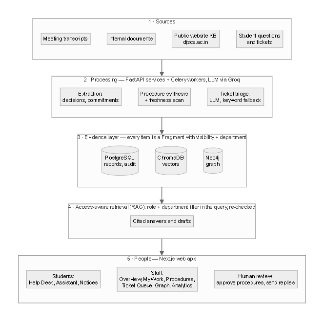
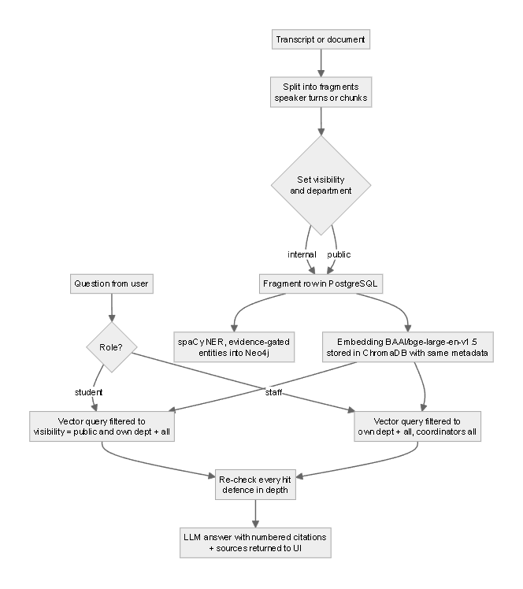
Figure 5.3 shows the help-desk sequence. A student’s question is first answered from public evidence; if the student is not satisfied, a ticket is raised, triaged by the LLM (or the keyword fallback), routed to the configured office, and given an AI draft with sources that only staff can see. A faculty member edits and sends the reply. Figure 5.4 shows the lifecycle of a procedure (called a skill in the code): drafts are extracted from internal evidence, approved by a coordinator, marked stale when contradicted by new evidence, and eventually retired or rejected.
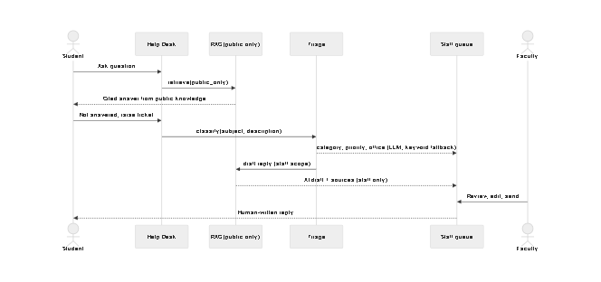
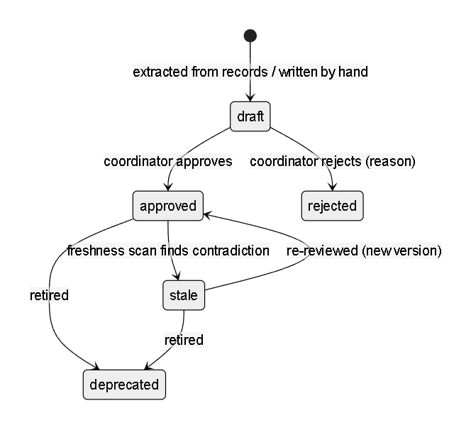
Permissions are enforced in the API; the user interface only hides what the API already refuses.
| Capability | Student | Faculty | Committee Coordinator | System Administrator |
|---|---|---|---|---|
| Help Desk answers (public knowledge only) | ✓ | ✓ | ✓ | ✓ |
| Raise tickets, see own tickets | ✓ | ✓ | ✓ | ✓ |
| Read notices addressed to them | ✓ | ✓ | ✓ | ✓ |
| Staff assistant over internal evidence | ✗ | own dept + institution-wide | all | all |
| Ticket queue, AI draft, reply | ✗ | ✓ | ✓ | ✓ |
| My Work, Faculty Desk check-in | ✗ | ✓ | ✓ | ✓ |
| Approve / reject / retire procedures; extract | ✗ | ✗ | ✓ | ✓ |
| Analytics, assign tasks, confirm completion | ✗ | ✗ | ✓ | ✓ |
| Manage users and roles | ✗ | ✗ | ✗ | ✓ |
The relational schema has 17 tables (backend/app/models/structured.py); list-valued fields are
stored as JSON strings. Table 5.3 groups them by purpose.
| Table | Purpose |
|---|---|
| User | Login, role, department; year, semester and division for students |
| Employee | Staff directory (seeded from institution.yaml) |
| Meeting | Title, date, summary, decisions, participants, raw transcript, department |
| Fragment | One citable excerpt: text, source, speaker, visibility, department (mirrored in ChromaDB) |
| Commitment, CommitmentUpdate | Task, owner, due date, status, progress, blocker; history of updates |
| CheckIn | Faculty end-of-day conversation and the task updates it produced |
| Skill, SkillVersion, SkillCitation | Procedure (steps, rules, owner office, review date, status), its versions, and cited fragments |
| Ticket | Student query, triage (category, priority, office, engine), AI draft and sources, human reply |
| Notice, NoticeRecipient | Notices with audience filters and read receipts |
| ActiveInsight | Deadline, risk and bottleneck alerts on the overview |
| QueryLog | Questions asked (for analytics and knowledge gaps) |
| AuditLog | Who did what and when |
| Document, ProgressReport | Uploaded document records; generated progress reports |
The backend is written in FastAPI (backend/app). Its 17 routers in api/v1/ stay
thin; logic lives in 24 module-level services in services/. The main services are:
Ingestion endpoints return HTTP 202 and enqueue work on Celery. Scheduled jobs (Celery beat) run the daily 08:00 insight sweep, the faculty check-in at a configured hour, an hourly follow-up scan for stale or overdue commitments, procedure extraction at 03:00, the freshness scan at 04:00, and reminders for academic dates and for commitments due within three days.
Users have one of four ranked roles (student < employee < manager < admin, shown in the
interface as Student, Faculty, Committee Coordinator and System Administrator). Internal routes depend on
require_staff and elevated actions on require_role("manager"); self-registration
creates students only. Retrieval applies the policy twice, once inside the vector query and once on every
returned hit (Algorithm 6.1), so a defect in one layer alone cannot leak evidence. Ticket triage is shown in
Algorithm 6.2. Students receive HTTP 404 for other people’s tickets and never receive ai_* fields.
Algorithm 6.1 AnswerQuestion(question, user)
public_only ← (user.role = student)
depts ← {user.department, "all"} unless user.role ≥ manager
filter ← {visibility = public if public_only} ∧ {department ∈ depts if depts}
hits ← VectorSearch(embed(question), k = 5, where = filter)
∪ VectorSearch(procedures, k = 2, where = filter)
hits ← [h ∈ hits | (¬public_only ∨ h.visibility = public)
∧ (no depts ∨ h.department ∈ depts)]
answer ← LLM(rules + numbered hits, question)
RETURN answer, hits ▷ sources always returned
Algorithm 6.2 TriageTicket(subject, description)
r ← LLMClassify(text, allowed = categories from institution.yaml)
IF r is invalid OR r.category ∉ allowed THEN r ← KeywordClassify(text)
ticket.routed_to ← office(r.category); ticket.priority ← r.priority
ticket.ai_draft, ticket.ai_sources ← AnswerQuestion(text, staff)
▷ ai_* fields are never returned to students
The frontend uses Next.js 16 and React 19 with Tailwind CSS (frontend/src), with a restrained,
dense visual style so that tables of commitments, tickets and procedures stay readable. All API calls go
through one helper, and /api/* is proxied to the backend. A persistent banner states that the
system is a demonstration prototype (Figure 6.1).
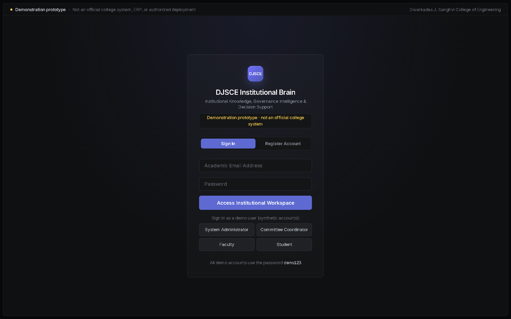
Students see the Help Desk, Assistant, Notices and Calendar. The Help Desk (Figure 6.2) accepts a question in plain language and answers only from public information, listing the sources used (Figure 6.3). If the answer does not help, the student raises a ticket from the same page.
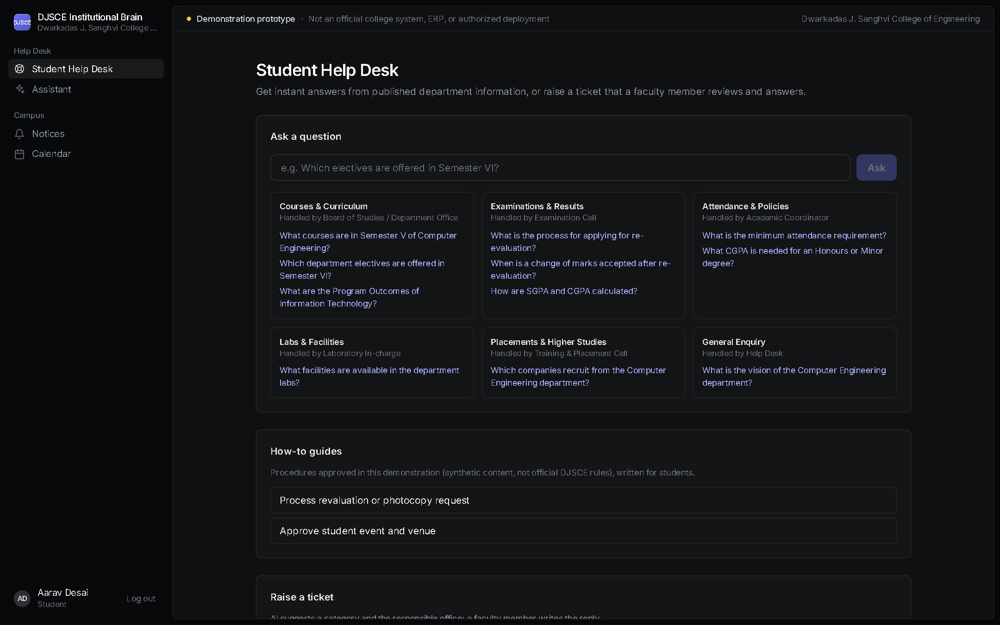
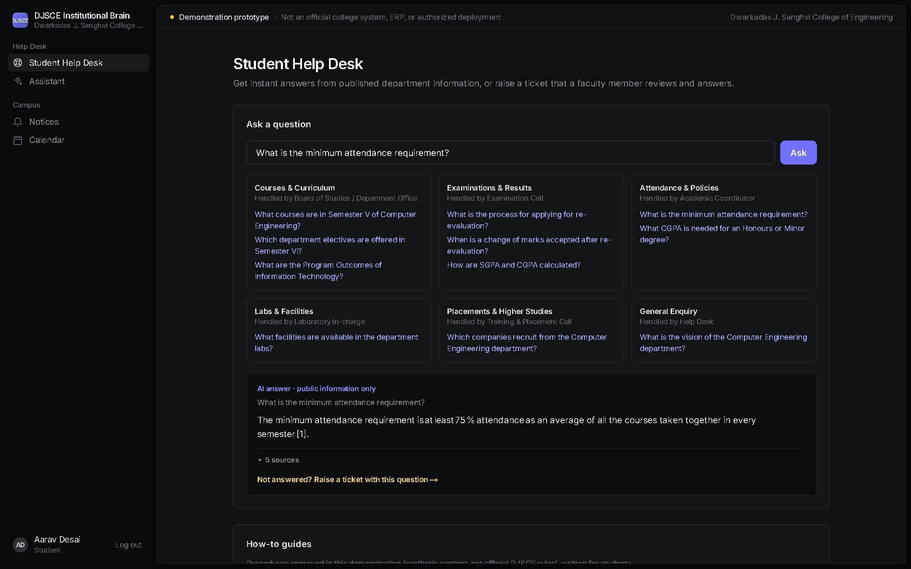
Staff additionally see Overview, My Work, Faculty Desk, Ticket Queue, Meetings, Procedures, Documents and Knowledge Graph. The Overview (Figure 6.4) gathers deadline and risk insights and upcoming commitments. My Work (Figure 6.5) lists each commitment with progress, due date and who assigned it; marking it done sends it to the coordinator for confirmation. In the Ticket Queue (Figure 6.6) staff see the AI triage and an unsent, cited draft reply, which they edit and send themselves.
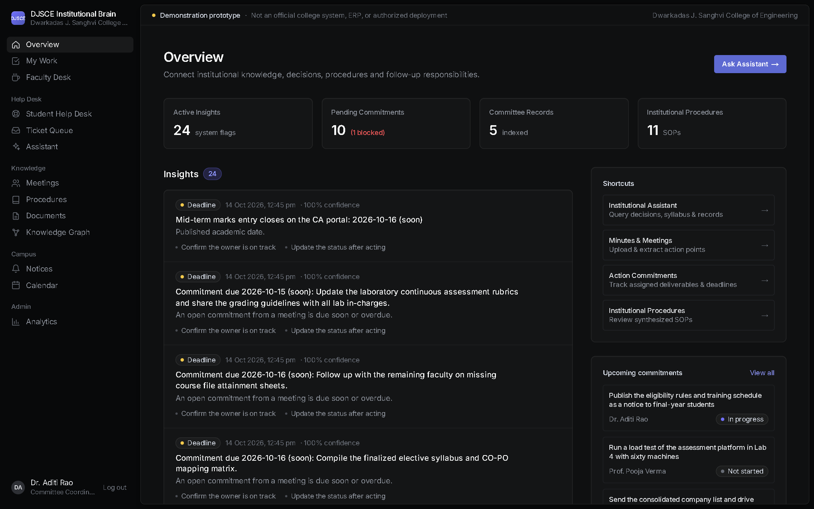
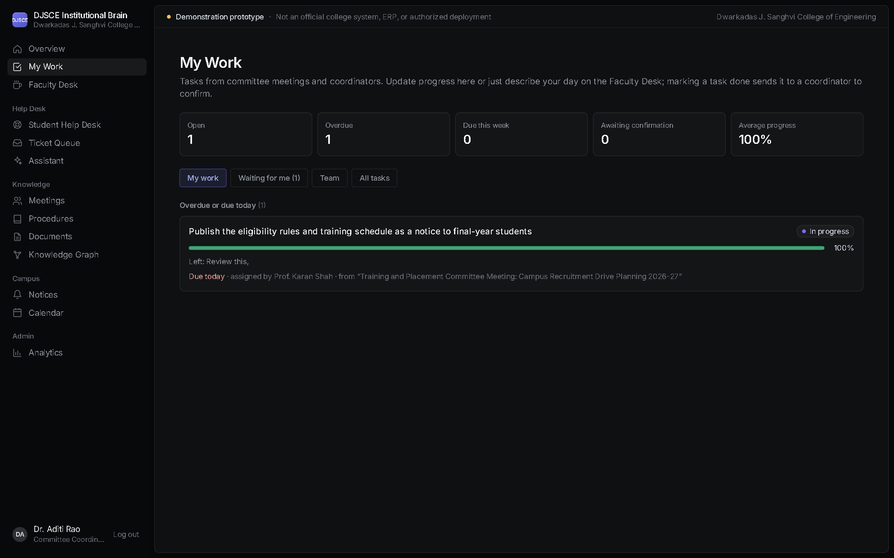
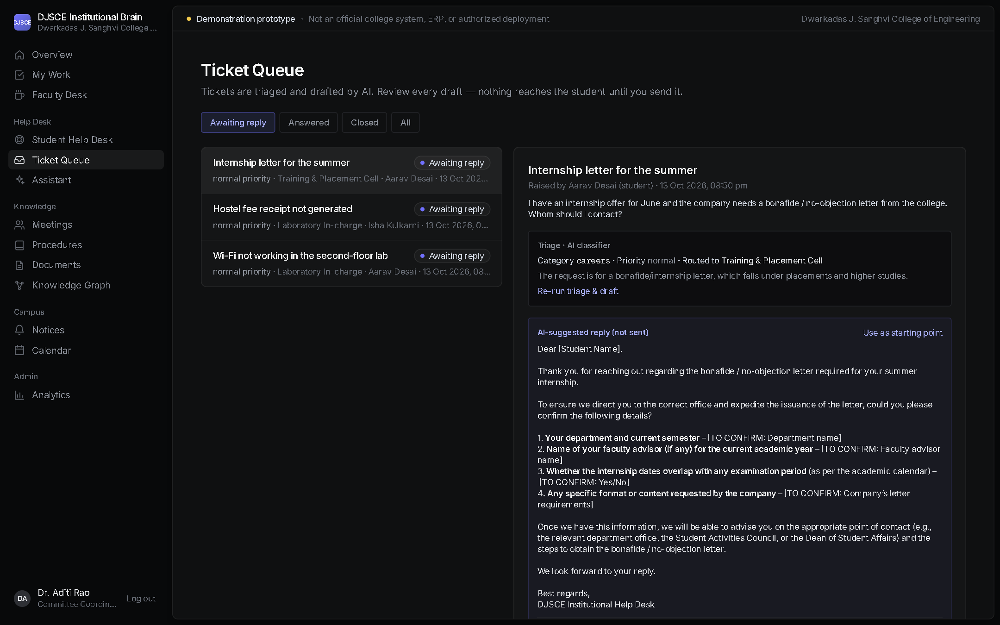
Procedures (Figure 6.7) show the owner office, the next review date, the steps and the evidence each step was derived from. Meetings (Figure 6.8) list summarised meetings with their decisions and a minutes export. The knowledge graph (Figure 6.9) links people, committees, meetings and documents for navigation.
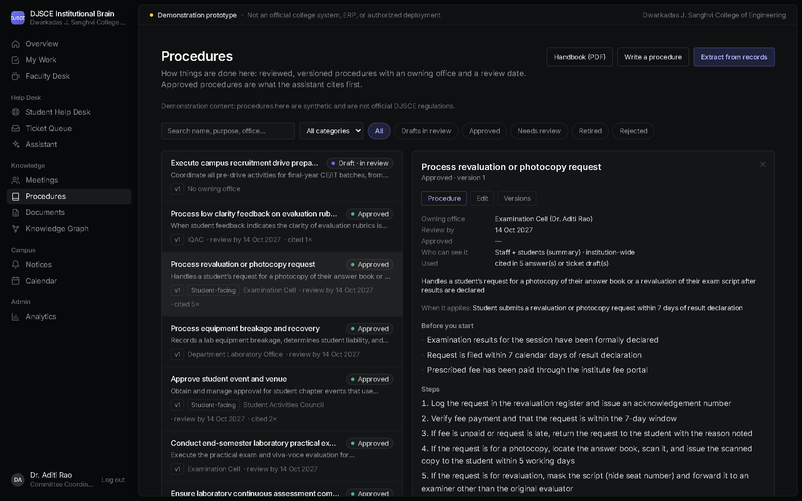
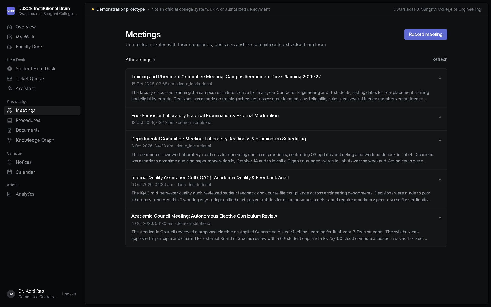
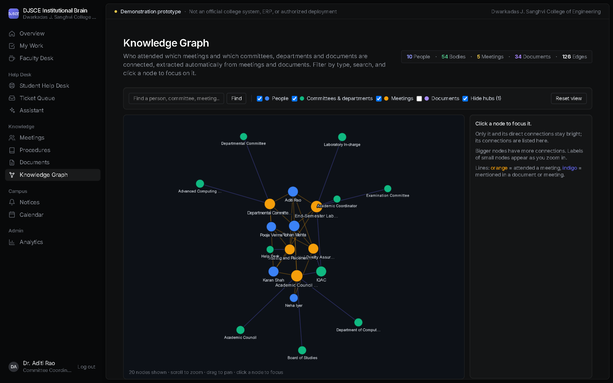
Coordinators see Analytics (Figure 6.10): ticket volume by category, questions asked and knowledge gaps. The staff assistant (Figure 6.11) answers over internal evidence within the user’s department scope, with numbered citations that expand to the source excerpt. Administrators also manage users and roles.
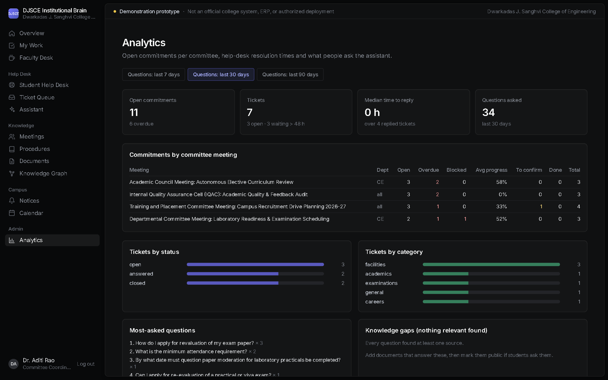
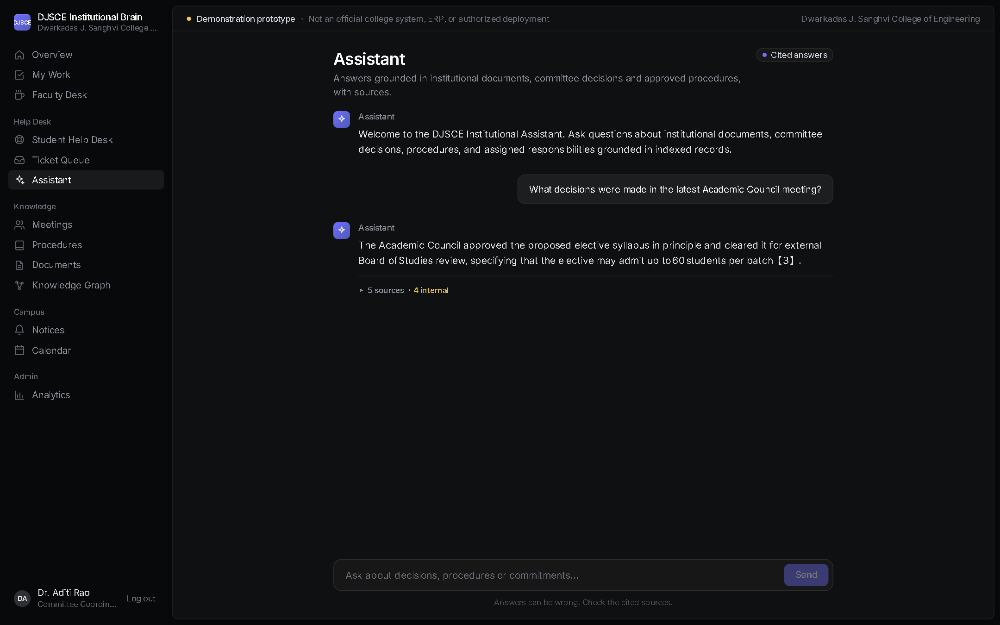
Docker Compose runs eight services: PostgreSQL, ChromaDB, Redis, the backend, a Celery worker, Celery
beat, the frontend, and an on-demand evaluator. Neo4j runs alongside them for the knowledge graph. Startup
runs alembic upgrade head, so data survives rebuilds, and health checks gate the start order.
A tunnelling script exposes the demonstration for remote review.
235 backend tests in 26 test modules run against SQLite with the LLM, ChromaDB and Neo4j mocked. They cover authentication and roles, student access (every internal route refuses students), department scope, transcripts and extraction, commitments and My Work, the Faculty Desk, procedures (versions, approval, rejection, retirement, export), freshness, the help desk, notices, the calendar, analytics, user administration, the graph, auditing, insights, parsing and date parsing, plus a test that fails if the database models and migrations drift apart. The frontend is checked by ESLint and the TypeScript compiler in continuous integration.
All labels were written by the team and are stored in evaluation/data/ (Table 7.1).
| Set | Contents | Size |
|---|---|---|
| Committee transcripts | Synthetic: Academic Council, IQAC, departmental lab readiness, placement planning (plus one demo minutes file for the live upload) | 4 (+1) |
| Internal documents | Synthetic proposals, guidelines and SOPs | 3 + 3 SOPs |
| Public knowledge (mini-project) | CE department FAQs, IT department overview | 2 |
| Public website knowledge base | Authentic content from www.djsce.ac.in, each file cited by URL, retrieved 13 Oct 2026 | 26 files |
| Triage set | Labelled student queries, 6 categories, urgency labels | 96 |
| Q&A set | Questions with gold sources and answer keywords | 33 |
| Visibility set | Adversarial student questions about internal content | 20 |
| Department set | CE/IT students asking about the other department | 10 |
| Commitments gold set | Hand-labelled commitments in the transcripts | 9 |
Table 7.2 lists representative functional test cases; each is automated in backend/tests/ and
passes. The role-access matrix of Table 5.2 is covered by test_student_access.py,
test_departments.py and test_admin_users.py.
| ID | Feature | Case | Expected | Result |
|---|---|---|---|---|
| T1 | Access | Student calls any internal route | 403 | Pass |
| T2 | Access | Student opens another student’s ticket | 404, no ai_* fields | Pass |
| T3 | Visibility | Student question whose best match is internal | Only public sources returned | Pass |
| T4 | Department | CE faculty retrieves an IT-only fragment | Not returned | Pass |
| T5 | Transcripts | Submit an empty transcript | 400, nothing queued | Pass |
| T6 | Extraction | Transcript with “I will … by Friday” | Commitment with owner and due date | Pass |
| T7 | My Work | Owner marks task done | Status review; coordinator confirms or sends back | Pass |
| T8 | Procedures | Approve, edit, reject with reason, retire | Versions kept, reason stored | Pass |
| T9 | Freshness | New fragment contradicts an approved procedure | Procedure marked stale with evidence | Pass |
| T10 | Help desk | LLM unavailable | Keyword triage used; ticket still routed | Pass |
| T11 | Notices | Notice to TE CE division A | Only matching students receive it | Pass |
| T12 | Admin | Non-admin opens user management; deactivated user logs in | Refused; login and old token rejected | Pass |
| T13 | Migrations | Models changed without a migration | Test fails | Pass |
No large parameter sweep was run, because the LLM API has a daily token quota. Parameters were chosen once and changed only when the baseline run exposed a specific failure (Table 7.3).
| Parameter | Value | Reason |
|---|---|---|
| Chunk size / overlap | 800 / 150 characters, paragraph-aware | The baseline run split FAQ answers from their questions; chunks now keep question–answer pairs together |
| Retrieval depth | Top 5 fragments + up to 2 approved procedures | Approved procedures should outrank meeting discussion when equally relevant |
| Answer temperature | 0.2 | Factual answers; 0.6 only for the conversational check-in |
| Classification temperature | 0.1, JSON output | Stable labels |
| Speaker names in fragments | Included | The baseline run missed “who decided” questions without them |
| LLM | openai/gpt-oss-120b (Groq) | Large open-weight model with JSON output, available on Groq’s free tier |
All results come from the final evaluation run (19 October 2026, 14:55 UTC, recorded in
results/RESULTS.md). The baseline run of 13 October 2026 is shown for comparison in Table 7.8.
| Engine | Coverage | Accuracy | Macro-F1 | Urgency F1 | p50 (s) | p95 (s) |
|---|---|---|---|---|---|---|
| keyword | 100 % | 57.3 % | 0.586 | 0.533 | 0.00 | 0.00 |
| llm | 100 % | 90.6 % | 0.907 | 1.000 | 2.49 | 4.53 |
| laya | 67 % | 51.0 % | 0.563 | 0.533 | 1.39 | 1.92 |
| llm → keyword (default) | 100 % | 90.6 % | 0.907 | 1.000 | 2.49 | 4.53 |
| laya → keyword | 100 % | 68.8 % | 0.684 | 0.533 | 1.39 | 1.92 |
| laya → llm → keyword | 100 % | 80.2 % | 0.794 | 0.625 | 1.54 | 4.47 |
Single engines count an abstention as wrong; chains fall back to the next engine.
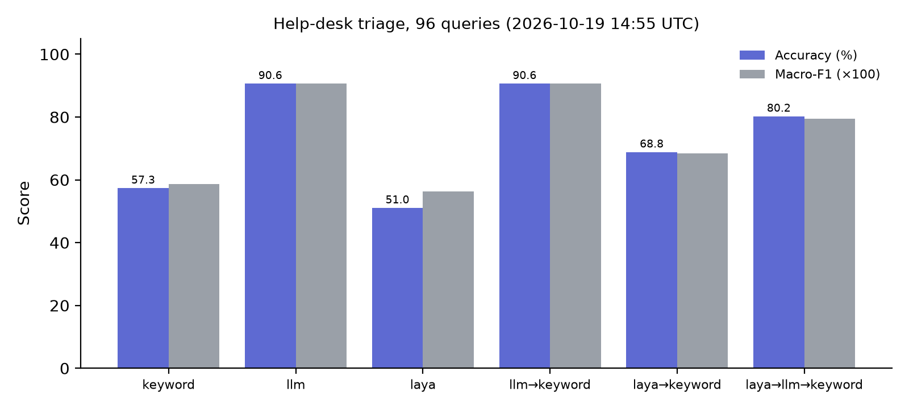
| Asked as | n | Hit@5 | Correct | Cited | Abstained | p50 (s) | p95 (s) |
|---|---|---|---|---|---|---|---|
| student | 21 | 100 % | 90 % | 100 % | 0 % | 3.25 | 7.84 |
| staff | 12 | 100 % | 92 % | 92 % | 0 % | 8.80 | 10.11 |
| overall | 33 | 100 % | 91 % | 97 % | 0 % | 6.73 | 10.03 |
| Test | Queries | Leaks | Definition of a leak |
|---|---|---|---|
| Visibility (adversarial) | 20 | 0 | An internal source returned, or an internal-only fact stated |
| Department isolation | 10 | 0 | A source from a department outside the student’s own plus institution-wide |
| Gold | Extracted | Matched | Precision | Recall | F1 |
|---|---|---|---|---|---|
| 9 | 9 | 9 | 1.00 | 1.00 | 1.00 |
| Measure | Baseline (13 Oct) | Final (19 Oct) |
|---|---|---|
| Triage accuracy, LLM / keyword / laya | 90.6 % / 57.3 % / 51.0 % | 90.6 % / 57.3 % / 51.0 % |
| Q&A questions | 24 | 33 (adds 8 public-website and IT-department questions) |
| Retrieval hit@5 | 100 % | 100 % |
| Answer correct (overall) | 71 % | 91 % |
| Answer correct (student) | 75 % | 90 % |
| Cited | 88 % | 97 % |
| Abstained | 8 % | 0 % |
| p95 answer latency | 8.2 s | 10.0 s |
| Visibility leaks | 0 / 20 | 0 / 20 |
| Department leaks | not measured | 0 / 10 |
| Commitments P / R | 1.00 / 1.00 | 1.00 / 1.00 |
Triage. The LLM classifier is clearly best (90.6 % accuracy, macro-F1 0.907, urgency F1 1.00), 33 percentage points above the keyword baseline. laya abstained on a third of the queries (coverage 67 %) and was less accurate even with a keyword fallback (68.8 %); placing it before the LLM lowered accuracy to 80.2 %. The default chain therefore stays LLM → keyword, which keeps 90.6 % while the keyword fallback guarantees a category when the LLM is unavailable. The keyword classifier answers in under a millisecond; the LLM’s p95 of 4.5 s is acceptable for a ticket that a person answers later.
Question answering. Retrieval found a correct source in the top five for every question in both runs, so the remaining errors lie in answer generation, not retrieval. Answer correctness rose from 71 % to 91 % after two changes motivated by the baseline run: paragraph-aware chunking that keeps FAQ questions with their answers, and speaker names in transcript fragments. Abstentions fell from 8 % to 0 %. Latency rose: overall p95 went from 8.2 s to 10.03 s (staff questions 10.11 s), just above the 10 s target, so Objective 7 is narrowly missed. Likely causes are the extra procedure retrieval, longer chunks in the prompt, and the hosted API’s own variance; these were not isolated. The final Q&A set is also larger (33 vs 24 questions), so the two runs are not strictly like-for-like. Student answers, which search only public knowledge, have a p95 of 7.84 s.
Isolation. No internal source and no internal-only fact reached a student in 20 adversarial queries, and no out-of-department source reached a student in 10 cross-department queries. Because the filter is applied in the vector query and checked again on every hit, a single bug in either layer would not be enough to cause a leak.
Extraction. All 9 hand-labelled commitments in the 4 transcripts were extracted with the correct owner, and nothing extra was extracted. The set is small, so this shows that the pipeline works on clearly phrased commitments; ambiguous or implied commitments are future work.
Threats to validity. All committee data and every gold label were written by the team, so the results show that the system works as designed on realistic data; they are not a field study with real users. “Answer correct” is a keyword check against gold facts and does not judge fluency or completeness. LLM outputs vary between runs, and the evaluation sets are small (tens of items), so a single item changes a percentage by several points. The public knowledge base is a snapshot and may drift from the live website.
This project built and evaluated a platform that turns a college’s meetings and documents into cited, reviewed and access-controlled knowledge. Its contribution is the combination of three properties that existing tools offer separately or not at all: evidence-first answers, human review built into procedures and ticket replies, and visibility and department filters enforced inside retrieval.
On the evaluation sets, LLM triage routed 90.6 % of tickets correctly (keyword baseline 57.3 %); a correct source was retrieved for every question and 91 % of answers were correct; all 9 labelled commitments were extracted; and no internal or out-of-department evidence reached a student. Six of the seven objectives were met; the 95th-percentile answer latency (10.03 s) narrowly missed its 10 s target.
[1] P. Lewis, E. Perez, A. Piktus, F. Petroni, V. Karpukhin, N. Goyal, H. Küttler, M. Lewis, W. Yih, T. Rocktäschel, S. Riedel, and D. Kiela, “Retrieval-augmented generation for knowledge-intensive NLP tasks,” in Advances in Neural Information Processing Systems 33 (NeurIPS), 2020. arXiv:2005.11401.
[2] Y. Gao et al., “Retrieval-augmented generation for large language models: A survey,” arXiv:2312.10997, 2023 (v5, Mar. 2024).
[3] V. Karpukhin, B. Oğuz, S. Min, P. Lewis, L. Wu, S. Edunov, D. Chen, and W. Yih, “Dense passage retrieval for open-domain question answering,” in Proc. EMNLP, 2020, pp. 6769–6781.
[4] N. Reimers and I. Gurevych, “Sentence-BERT: Sentence embeddings using Siamese BERT-networks,” in Proc. EMNLP-IJCNLP, Hong Kong, 2019, pp. 3982–3992, doi: 10.18653/v1/D19-1410.
[5] S. Xiao, Z. Liu, P. Zhang, N. Muennighoff, D. Lian, and J.-Y. Nie, “C-Pack: Packed resources for general Chinese embeddings,” in Proc. 47th Int. ACM SIGIR Conf., 2024. arXiv:2309.07597.
[6] T. Gao, H. Yen, J. Yu, and D. Chen, “Enabling large language models to generate text with citations,” in Proc. EMNLP, 2023, pp. 6465–6488.
[7] S. Es, J. James, L. Espinosa-Anke, and S. Schockaert, “RAGAs: Automated evaluation of retrieval augmented generation,” in Proc. 18th Conf. EACL: System Demonstrations, St. Julian’s, Malta, 2024, pp. 150–158.
[8] Z. Ji, N. Lee, R. Frieske, T. Yu, D. Su, Y. Xu, E. Ishii, Y. Bang, A. Madotto, and P. Fung, “Survey of hallucination in natural language generation,” ACM Computing Surveys, vol. 55, no. 12, Art. 248, pp. 1–38, 2023.
[9] L. Huang et al., “A survey on hallucination in large language models: Principles, taxonomy, challenges, and open questions,” ACM Transactions on Information Systems, doi: 10.1145/3703155. arXiv:2311.05232.
[10] M. Purver, J. Dowding, J. Niekrasz, P. Ehlen, S. Noorbaloochi, and S. Peters, “Detecting and summarizing action items in multi-party dialogue,” in Proc. 8th SIGdial Workshop on Discourse and Dialogue, Antwerp, Belgium, 2007, pp. 18–25.
[11] M. Zhong et al., “QMSum: A new benchmark for query-based multi-domain meeting summarization,” in Proc. NAACL-HLT, 2021, pp. 5905–5921, doi: 10.18653/v1/2021.naacl-main.472.
[12] S. Zeng, J. Zhang et al., “The good and the bad: Exploring privacy issues in retrieval-augmented generation (RAG),” in Findings of ACL 2024, Bangkok, 2024, pp. 4505–4524, doi: 10.18653/v1/2024.findings-acl.267.
[13] K. Greshake, S. Abdelnabi, S. Mishra, C. Endres, T. Holz, and M. Fritz, “Not what you’ve signed up for: Compromising real-world LLM-integrated applications with indirect prompt injection,” in Proc. 16th ACM Workshop on Artificial Intelligence and Security (AISec ’23), 2023. arXiv:2302.12173.
[14] R. S. Sandhu, E. J. Coyne, H. L. Feinstein, and C. E. Youman, “Role-based access control models,” IEEE Computer, vol. 29, no. 2, pp. 38–47, Feb. 1996.
[15] A. Revina, K. Buza, and V. G. Meister, “IT ticket classification: The simpler, the better,” IEEE Access, 2020.
[16] F. Zangari, M. Marcuzzo, M. Schiavinato, A. Gasparetto, and A. Albarelli, “Ticket automation: An insight into current research with applications to multi-level classification scenarios,” Expert Systems with Applications, vol. 225, Art. 119984, 2023, doi: 10.1016/j.eswa.2023.119984.
[17] A. Hogan et al., “Knowledge graphs,” ACM Computing Surveys, vol. 54, no. 4, Art. 71, pp. 1–37, 2021, doi: 10.1145/3447772.
[18] D. Edge et al., “From local to global: A graph RAG approach to query-focused summarization,” arXiv:2404.16130, 2024.
[19] C. W. Okonkwo and A. Ade-Ibijola, “Chatbots applications in education: A systematic review,” Computers and Education: Artificial Intelligence, vol. 2, Art. 100033, 2021, doi: 10.1016/j.caeai.2021.100033.
[20] S. Wollny, J. Schneider, D. Di Mitri, J. Weidlich, M. Rittberger, and H. Drachsler, “Are we there yet? — A systematic literature review on chatbots in education,” Frontiers in Artificial Intelligence, vol. 4, Art. 654924, 2021, doi: 10.3389/frai.2021.654924.
[21] Dwarkadas J. Sanghvi College of Engineering, public website, https://www.djsce.ac.in (pages listed per file in djsce_public_data/kb/), retrieved 13 Oct 2026.